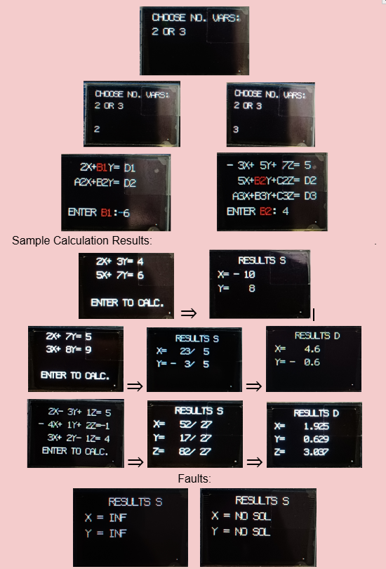

Solving equations directly in hardware.
The goal was to build more than an arithmetic module: I wanted the FPGA to behave like a self-contained calculator. The user chooses a two- or three-variable system, enters each coefficient using physical switches, follows prompts on the OLED, and receives the calculated solution without a PC-side application.
Interactive input
The OLED presents the equation and prompts for coefficients one at a time. The active coefficient is highlighted in a different colour, creating a cursor-like interface. LEDs mirror the switch state to give immediate physical feedback.
Result presentation
Solutions are first shown in exact rational form. Once a result is available, the centre button changes role from ENTER to an S⇔D control, allowing the user to switch between fraction and decimal representations.
From switches to solution.

Why I moved from RREF to Cramer's Rule.
My initial plan was Reduced Row Echelon Form. It is a natural mathematical method, but implementing row reduction in RTL introduced more control complexity than expected. The design needs to manage operations such as pivot handling, repeated row transformations and intermediate values explicitly in hardware.
RREF / Row Reduction
Flexible and mathematically familiar, but procedural. A hardware implementation must coordinate a sequence of matrix operations and account for data-dependent cases.
Cramer's Rule
For a fixed 2×2 or 3×3 problem, determinant calculations have a predictable structure. This made the arithmetic easier to map into a purpose-built datapath.
Δ = det(A) Δx = det(Ax) Δy = det(Ay) Δz = det(Az)
x = Δx / Δ y = Δy / Δ z = Δz / Δ
The key lesson was that choosing an FPGA algorithm is not only about whether the mathematics works — its structure also determines the hardware that must be created.
A calculator built from cooperating hardware blocks.
The project combines user-input handling, control logic, coefficient storage, arithmetic and display formatting into one standalone system.
Two-variable mode
A₂X + B₂Y = D₂
The interface requests A₁ → B₁ → D₁ → A₂ → B₂ → D₂ before calculating X and Y.
Three-variable mode
A₂X + B₂Y + C₂Z = D₂
A₃X + B₃Y + C₃Z = D₃
The same interaction scales to twelve entered coefficients before X, Y and Z are calculated.
Exact fractions when possible. Decimals when useful.
The solver keeps the result available as a rational numerator/denominator pair, which naturally fits Cramer's Rule. The OLED can therefore show an exact fraction before presenting a decimal representation to three decimal places.
The S⇔D interaction was inspired by scientific calculators: after solving, BTNC toggles the presentation without requiring the user to re-enter the equations.
Fault states
Cramer's Rule requires a non-zero determinant for a unique solution. The calculator detects non-unique/unsolvable conditions rather than attempting an invalid division, and the OLED reports states such as INF or NO SOL.
Δ = 0 → no unique solution
The difficult parts became the most useful lessons.
Translating mathematics into RTL
Solving the equations mathematically was only the beginning. The operations also had to be expressed as finite digital hardware with signed values and intermediate arithmetic.
Finding a hardware-friendly method
RREF was my first approach. Moving to Cramer's Rule simplified the structure for the fixed 2×2 and 3×3 systems required by the project.
Reducing LUT utilisation
As the design grew, LUT usage became a constraint. I had to revisit how the Verilog was structured and reduce unnecessary logic so the complete design could fit within the FPGA's resources.
Designing with limited controls
With no keyboard, switches and buttons had to cover coefficient entry, confirmation, reset and result-format switching. OLED highlighting made the current input state clear.
This project changed how I viewed Verilog: the goal is not simply to write code that produces the right answer, but to understand what hardware that description asks the FPGA to build.